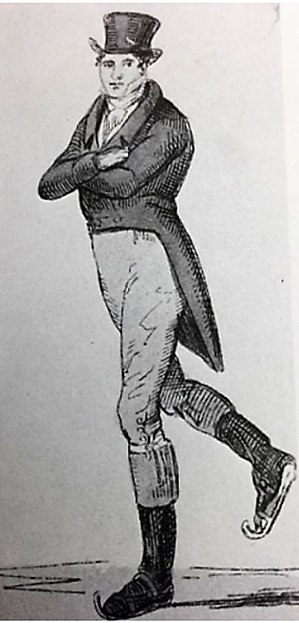
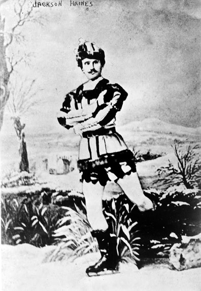
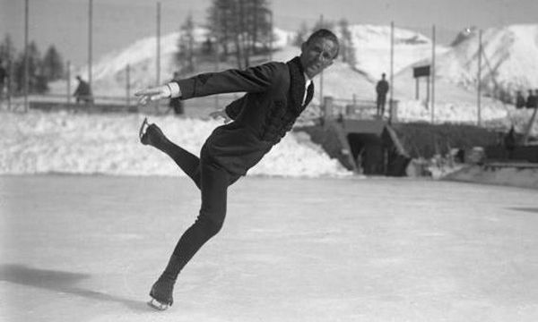

Have you ever imagined yourself floating and twirling as you move to the beat of a favourite song?
Perhaps you are a bit of a daredevil and have imagined yourself reaching for the heavens while being lifted by a single hand, or spinning face first inches off the ground until you barely know which way is up?
If so, figure skating is the sport for you. It is both breathtakingly dangerous and innocently graceful. It’s also one of the world’s favourite winter sports, and Canada has produced some of the world's best skaters.
History
Figure skating has been around since 1772 when it was first created by Robert Jones.
At that time skating was considered an indulgent pastime, but American Jackson Haines changed that when he introduced dance based free and expressive techniques in the 1860’s marking its evolution into an actual sport.

Learn More about Robert Jones

Learn more about Jackson Haines
Since then, figure skating has been in a state of constant evolution.
Skaters, their coaches and their choreographers are forever pushing the boundaries of beauty and difficulty to allow skaters to fully express themselves on the ice.

Learn more about Ulrich Salchow
People like Ulrich Salchow, a 10 time world champion between 1901-1911, performed the jump/turn combination which is now named after him.
The Salchow is a jump in which a skater takes off on the backwards inside edge of their skates and after doing any number of turns in the air, lands on the backwards outside edge of the other foot.
The 1976 Olympic gold medalist Dorothy Hamill pioneered the “Hamill Camel” which is a camel spin that changes into a sit spin.
And Canada’s own Kurt Browning was the first person to land a quadruple jump in competition - although the jump (a quad toe loop) had already been named.
The difficulty and skill needed to execute skating routines is often under-appreciated, precisely because skaters are often able to make it seem so easy. This website is here to reveal a little of the magic that goes into a great skater and a great routine.
But first let’s get to the basics.
Governing Bodies
The rules for skating competitions in each country are mostly the same but the group that maintains them are different.
In Canada, figure skating rules and regulations for clubs and competitions are set by Skate Canada which oversees
over 160,000 members and 1,100 skating clubs and schools in the country.
Learn more about Skate Canada by clicking the image.